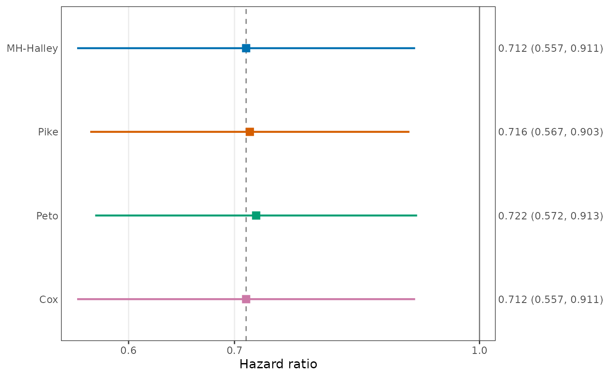

Estimates the hazard ratio (HR) of the treatment group relative to the
control group, with its standard error on the log scale and a Wald
confidence interval, by one or more of eleven methods: the proposed
closed-form estimator ("MH_Halley"), five other one-step
corrections, the
Mantel-Haenszel, Pike, and Peto estimators, and the Cox partial likelihood
estimator computed either by survival::coxph() or by Newton-Raphson
iteration on the same risk-set summaries as the closed-form estimators.
Tied event times are handled by the Efron or the Breslow method, and the
baseline hazard may differ between strata. The data are given either as
vectors or by a formula Surv(time, event) ~ group + strata(s) with
a data frame, as in survival::coxph().
Usage
EstHR(
time,
event,
group,
control,
method,
ties = "efron",
strata = NULL,
conf.level = 0.95,
is_sorted = FALSE,
tol = 1e-12,
data = NULL
)Arguments
- time
Numeric vector of follow-up times, or a formula
Surv(time, event) ~ group, optionally with+ strata(s)(see Formula interface in Details).- event
Vector of event indicators, 1 (event) or 0 (censored), or logical, aligned with
time. With a formula, the data frame may be given here instead of indata, as incoxph(formula, data).- group
Vector of group labels aligned with
time. Subjects withgroup != controlform the treatment group. Not used with a formula.- control
Single value of
groupthat identifies the control group. With a formula, the default is the first level of the group variable if it is a factor and its smallest value otherwise, which is the reference level ofcoxph().- method
Character vector of one or more of
"MH_Halley"(proposed),"MH_Newton","Pike_Halley","Pike_Newton","MH_Chebyshev","Pike_Chebyshev","MH","Pike","Peto","Cox", and"Cox_NR", without duplicates. See Details.- ties
Character string,
"efron"(default, as insurvival::coxph()) or"breslow": the handling of tied event times in the partial likelihood. It affects the one-step methods,"Cox", and"Cox_NR", and not"MH","Pike", or"Peto".- strata
Optional vector of stratum labels aligned with
time. Each stratum has its own baseline hazard and the HR is common to all strata. DefaultNULL(no stratification). With a formula, strata are given bystrata()in the formula instead.- conf.level
Confidence level of the interval. Default 0.95.
- is_sorted
Logical. If
TRUE, the rows are taken to be sorted in ascending order oftimewithin strata, with the rows of each stratum contiguous, and the internal sorting is skipped. An error is raised if they are not. DefaultFALSE.- tol
Positive convergence tolerance of
"Cox"(passed tosurvival::coxph.control()aseps) and of"Cox_NR"(on the Newton step of the log HR). Default1e-12.- data
A data frame (or list) in which the variables of a formula are evaluated. Used only with a formula. Default
NULL(the environment of the formula).
Value
An object of class "EstHR". For one method, a named numeric
vector with elements coef (log HR), exp(coef) (HR),
se(coef) (standard error of the log HR), and the lower and upper
confidence limits of the HR, named as in summary() of a
coxph fit ("lower .95" and "upper .95" for
conf.level = 0.95). For several methods, a matrix with one row
per method, in the order of method, and these five columns. The
elements are NA when the estimate cannot be computed, for example
when there is no event or no event in one of the groups.
The object has the attributes method, ties, and
conf.level; groups (the labels of the treatment and
control groups; the treatment label is the group of the first subject
of the treatment group); n and events (numbers of subjects
and events by group, named treatment and control);
n_strata (1 without strata); and n_removed (rows removed
by the formula interface for missing values). Subsetting with [
or [[ returns plain numbers. See print.EstHR and
plot.EstHR for the methods of print() and
plot().
Details
Let t_k (k = 1, ..., K) be the distinct event times, within
strata when strata is given. At t_k, let n_T_k and
n_C_k be the numbers at risk in the treatment and control groups
just before t_k, O_T_k and O_C_k the numbers of
events, n_k = n_T_k + n_C_k, and O_k = O_T_k + O_C_k. These
summaries are returned by RiskTable and are shared by all
methods except "Cox". Let O_T = sum O_T_k,
O_C = sum O_C_k, E_T = sum n_T_k O_k / n_k, and
E_C = sum n_C_k O_k / n_k.
The closed-form estimators of the log HR and their standard errors are
- MH
Mantel-Haenszel estimator
log(R / S), whereR = sum O_T_k n_C_k / n_kandS = sum O_C_k n_T_k / n_k. The variance issum(O_k n_T_k n_C_k / n_k^2) / (R S).- Pike
log((O_T E_C) / (O_C E_T)), with variance1 / E_T + 1 / E_C.- Peto
(O_T - E_T) / V, with variance1 / V, whereV = sum n_T_k n_C_k O_k (n_k - O_k) / (n_k^2 (n_k - 1))is the hypergeometric variance of the log-rank statistic.
The one-step methods "<anchor>_<step>" start from the
Mantel-Haenszel ("MH") or the Pike ("Pike") estimate
eta_0 and take one step on the score equation U(eta) = 0 of
the Cox partial likelihood. With U_0 = U(eta_0),
I_0 = -U'(eta_0)}, \code{J_0 = -U''(eta_0)}, and
\code{L_0 = -U'''(eta_0), all computed in one pass over the risk sets,
the step delta is
- Newton
U_0 / I_0;- Halley
2 U_0 I_0 / (2 I_0^2 + U_0 J_0)(the estimate isNAif the denominator is not positive);- Chebyshev
U_0 / I_0 - J_0 U_0^2 / (2 I_0^3), the second-order truncation of the Halley step.
The estimate of the log HR is eta_0 + delta, and its standard error
is (I_0 + J_0 delta + L_0 delta^2 / 2)^(-1/2), the information
expanded about eta_0 to the second order and evaluated at the
estimate. The proposed estimator is "MH_Halley".
Under the Breslow method, the score is
U(eta) = sum (O_T_k - O_k p_k) with
p_k = n_T_k exp(eta) / (n_C_k + n_T_k exp(eta)). Under the Efron
method, each tie block contributes O_k terms,
r = 0, ..., O_k - 1, in which n_T_k and n_C_k are
reduced by (r / O_k) O_T_k and (r / O_k) O_C_k.
The Cox estimate is computed in two ways.
- Cox
survival::coxph()with the convergence toleranceeps = tol, at most 100 iterations, andtimefix = FALSE, so that times are tied only when they are exactly equal, as inRiskTable. The standard error is that ofcoxph().- Cox_NR
Newton-Raphson iteration on the risk-set summaries, started from the Mantel-Haenszel estimate. A step that does not reduce the absolute score is halved. Iteration stops when the Newton step is smaller than
tol, and the standard error isI(eta)^(-1/2)at the final value. If the iteration does not converge in 100 steps, a warning is given andNAis returned.
Swapping the roles of the groups changes the sign of the log HR of every method and leaves the standard error unchanged.
Formula interface. With a formula Surv(time, event) ~ group as the
first argument, the variables are taken from data (or from the
environment of the formula), as in survival::coxph(). The response
must be Surv(time, event) for right-censored data; an event
indicator coded 1 and 2 (2 for an event) is accepted, as by
Surv(). The right-hand side has one group term, a variable or an
expression such as factor(x) with exactly two distinct values, and
optionally strata() terms; several variables in strata() (or
several strata() terms) define strata by their combinations. Other
terms, interactions, and . are not allowed. Rows with a missing
value in any of the variables are removed, and their number is stored in
the attribute n_removed. The arguments group and
strata are not used with a formula, and method and the
other arguments are given by name.
See also
RiskTable for the risk-set summaries,
print.EstHR and plot.EstHR.
Examples
# Formula interface, as in survival::coxph()
EstHR(Surv(rfstime, status) ~ hormon, data = survival::gbsg,
method = "MH_Halley")
#> Hazard ratio of the treatment group relative to the control group
#>
#> Treatment (1): n = 246, events = 94
#> Control (0): n = 440, events = 205
#> Ties: efron
#>
#> coef exp(coef) se(coef) z Pr(>|z|)
#> MH_Halley -0.3640 0.6949 0.1250 -2.911 0.0036
#>
#> exp(coef) lower .95 upper .95
#> MH_Halley 0.6949 0.5438 0.8879
#>
#> Methods:
#> MH_Halley Halley step from the Mantel-Haenszel estimate (proposed)
# Several methods, stratified by tumor grade
est <- EstHR(Surv(rfstime, status) ~ hormon + strata(grade),
data = survival::gbsg,
method = c("MH_Halley", "Pike", "Peto", "Cox"))
est
#> Hazard ratio of the treatment group relative to the control group
#>
#> Treatment (1): n = 246, events = 94
#> Control (0): n = 440, events = 205
#> Ties: efron; strata: 3
#>
#> coef exp(coef) se(coef) z Pr(>|z|)
#> MH_Halley -0.3397 0.7120 0.1255 -2.707 0.00680
#> Pike -0.3343 0.7158 0.1185 -2.820 0.00480
#> Peto -0.3251 0.7224 0.1196 -2.720 0.00654
#> Cox -0.3397 0.7120 0.1255 -2.707 0.00680
#>
#> exp(coef) lower .95 upper .95
#> MH_Halley 0.7120 0.5567 0.9105
#> Pike 0.7158 0.5674 0.9030
#> Peto 0.7224 0.5715 0.9132
#> Cox 0.7120 0.5567 0.9105
#>
#> Methods:
#> MH_Halley Halley step from the Mantel-Haenszel estimate (proposed)
#> Pike Pike estimate
#> Peto Peto estimate
#> Cox Cox estimate by survival::coxph()
plot(est)

# Vectors
set.seed(1)
n <- 200
time <- c(rexp(n / 2, rate = 0.10), rexp(n / 2, rate = 0.15))
event <- rbinom(n, 1, 0.8)
group <- rep(c("C", "T"), each = n / 2)
EstHR(time, event, group, control = "C", method = "MH_Halley")
#> Hazard ratio of the treatment group relative to the control group
#>
#> Treatment (T): n = 100, events = 80
#> Control (C): n = 100, events = 76
#> Ties: efron
#>
#> coef exp(coef) se(coef) z Pr(>|z|)
#> MH_Halley 0.5605 1.7516 0.1678 3.34 0.000839
#>
#> exp(coef) lower .95 upper .95
#> MH_Halley 1.752 1.261 2.434
#>
#> Methods:
#> MH_Halley Halley step from the Mantel-Haenszel estimate (proposed)
# All methods, Breslow handling of ties; subsetting gives a plain matrix
methods <- c("MH_Halley", "MH_Newton", "Pike_Halley", "Pike_Newton",
"MH_Chebyshev", "Pike_Chebyshev", "MH", "Pike", "Peto",
"Cox", "Cox_NR")
est_all <- EstHR(ceiling(time), event, group, "C", methods,
ties = "breslow")
est_all[, c("coef", "se(coef)")]
#> coef se(coef)
#> MH_Halley 0.5323023 0.1675162
#> MH_Newton 0.5322978 0.1675162
#> Pike_Halley 0.5322982 0.1675163
#> Pike_Newton 0.5322461 0.1675159
#> MH_Chebyshev 0.5323023 0.1675162
#> Pike_Chebyshev 0.5322981 0.1675163
#> MH 0.5220081 0.1643096
#> Pike 0.4945073 0.1640762
#> Peto 0.5961108 0.1770913
#> Cox 0.5323024 0.1675162
#> Cox_NR 0.5323024 0.1675162